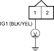
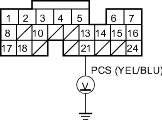
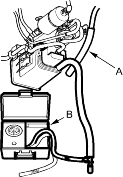

- At the harness side, measure voltage between the EVAP canister purge valve 2P connector terminals No. 1 and No. 2.
EVAP CANISTER PURGE VALVE 2P CONNECTOR
Is there any voltage?
YES |
- Replace the EVAP canister purge valve. |
NO |
- Go to step 18. |

- At the harness side, measure voltage between the EVAP canister purge valve 2P connector terminal No. 1 and body ground.
EVAP CANISTER PURGE VALVE 2P CONNECTOR

Is there battery voltage?
YES |
- Go to step 19. |
NO |
- Repair open in the wire between No. 4 ACG (10A) fuse in the under-dash fuse/relay box and the EVAP canister purge valve. |
- Turn the ignition switch OFF.
- Reconnect the EVAP canister purge valve 2P connector.
- Turn the ignition switch ON (II).
- Measure voltage between ECM/PCM connector terminals B21 and body ground.

Is there battery voltage?
YES |
- Substitute a known-good ECM/PCM and recheck. If the symptom/indication goes away, replace the original ECM/PCM. |
NO |
- Repair open in the wire between the EVAP canister purge valve and the ECM/PCM (B21). |
- Reconnect the vacuum hose to the EVAP canister.
- Remove the fuel fill cap.
- Disconnect the purge air hose (A) from the EVAP canister and connect a vacuum/pressure gauge 0-100 mm Hg (0-4 in. Hg) (B) to EVAP canister (C).

- Start the engine and raise speed to 3,000 rpm (min-1).
Does vacuum appear on gauge within 2 minutes?
YES |
- When vacuum appears, evaporative emission controls are OK. Check the EVAP two way valve test (see page 11-307). |
NO |
- Replace the EVAP canister. |